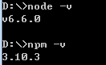

webpack是一款模块加载打包工具，可以对各个模块（js,css及图片等）进行加载，预处理，打包。
本文环境:win7
1、环境准备
webpack是基于node.js编写，所以请确保已安装Node.js及NPM。查看是否安装node.js和npm:
node -v/npm -v
2、安装
webpack安装命令:npm install -g webpack,-g表示进行全局安装,安装完成后可以通过webpack -h查看是否安装成功
3、创建项目
进入要创建项目的目录下，执行npm init按照提示填写信息，也可以不填一路回车到最后安装webpack依赖(如果上面已安装可忽略)
npm install webpack –save、npm install webpack –save-dev–save把依赖包添加到package.json中的dependencies下，是发布后还需要依赖的模块
–save-dev把依赖包添加到package.json中的devDependencies下，是开发时用到的模块
3.1 在项目根目录下创建index.html和entry.js文件
index.html文件内容:
|
|
|
|
webpack ./entry.js bundle.js就可以打包啦打包后在浏览器中打开index.html就可以看到页面啦-文字(这是我的webpack内容)。
3.2 css文件加载
在webpack中要加载css样式文件，需要先安装css文件的加载器css-loader和style-loadernpm install css-loader style-loader安装完成后在根目录添加一个style.css文件，文件内容为:
|
|
然后，修改entry.js文件，添加require(“!style!css!./style.css”);来引入css文件，执行webpack ./entry.js bundle.js后重新刷新页面就可以看到样式效果了
另外，也可以直接添加require(“./style.css”)，这种添加方式新增一个webpack.config.js文件,文件内容包括如下部分:其他详细参数可以参照webpack 1.x、webpack 2.x12345678910111213module.exports={ entry:"./entry.js", //定义入口文件，如果有多个入口，则使用数组方式 output:{ //配置打包结果 path:__dirname, //输出文件夹 filename:"./bundle.js", //打包结果文件名称 }, module:{ //模块加载相关定义 loaders: [ //通过正则表达式匹配不同文件，定义不同的加载器 {test:/\.css$/,loader:"style!css"}, {test:/\.(png|jpg)$/,loader:"url-loader"} ] }}
添加了webpack.config.js后，只要执行webpack就可以了。